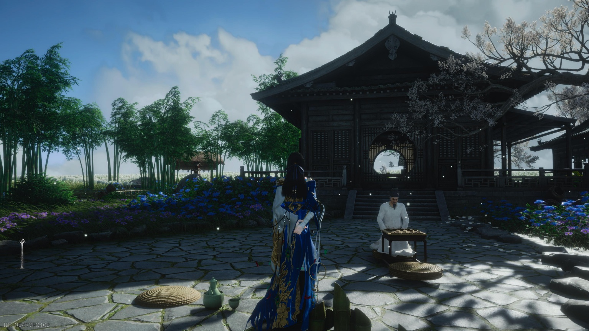
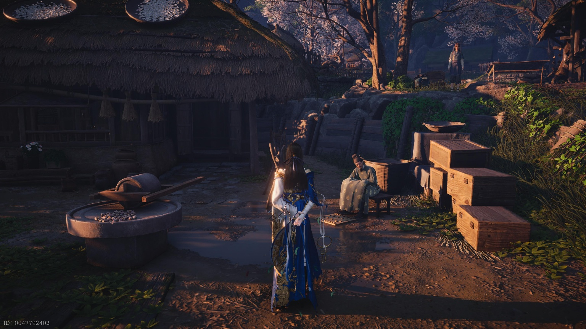
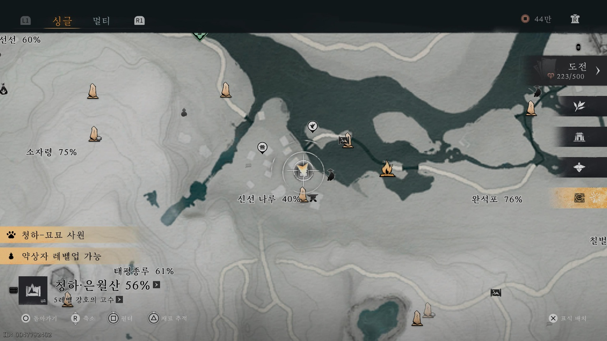
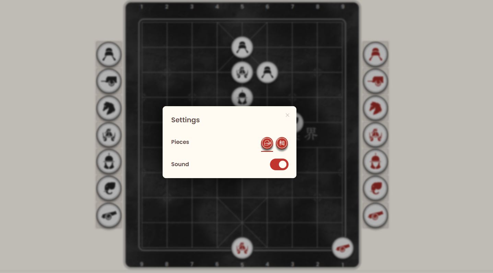

가이드
꿈속의 불선선: 엽비휴와 상기판
매일 단맥전 450개를 획득하는 도박 상기 공략
Posted by 윤쫑

♥
0
📜 가이드 개요
꿈속의 불선선에 있는 상기 NPC 엽비휴와 대결하여 단맥전을 버는 방법입니다.
전문가 난이도로 승리 시 1회당 150 단맥전을 획득하며, 하루 최대 3번 가능합니다.
💰 기대 수익:
- 일일 총액: 450 단맥전
- 주간 총액: 3,150 단맥전
- 일일 총액: 450 단맥전
- 주간 총액: 3,150 단맥전
⚠️ 주의: 경기에서 패배할 경우 단맥전 150개를 잃게 되므로 신중해야 합니다.

필수 준비물: 기보 획득
엽비휴의 도박 상기판을 이용하기 위해서는 [기보] 아이템이 필요합니다.
신선 나루에 있는 왕대연의 호감도를 최대로 올리면 획득할 수 있습니다.


필승 전략: 시뮬레이션 활용법
패배 시 손실을 막기 위해 Xiangqi.com의 AI 시뮬레이션을 활용하여 승리를 보장받는 것이 좋습니다.
1. 환경 설정 (PC 권장)
게임 내 상기판과 동일한 디자인을 적용하면 혼동을 줄일 수 있습니다.
크롬 확장 프로그램 Stylus를 설치하고 연운 전용 스킨을 입히세요.
2. Xiangqi.com 설정
사이트 접속 후 아래와 같이 설정합니다.
(Options > Settings에서 Image Pieces를 선택하면 스킨이 적용됩니다.)
- Menu: Play computer
- Level: Hu (10단계 - 최고 난이도)
- Side: Black (플레이어가 공격 입장이므로 AI가 대신 두게 설정)
- Mode: Custom position (문제 상황 세팅)

3. 실전 적용
- 사이트 하단의 Clear 버튼을 눌러 판을 비웁니다.
- 게임 속 NPC가 낸 묘수풀이 문제와 동일하게 기물을 배치합니다.
- Play computer누르고 상단 More > Flip board를 하면 AI가 최적의 수를 둡니다.
- AI가 두는 수를 보고 게임에서 그대로 따라 두면 승리할 수 있습니다.